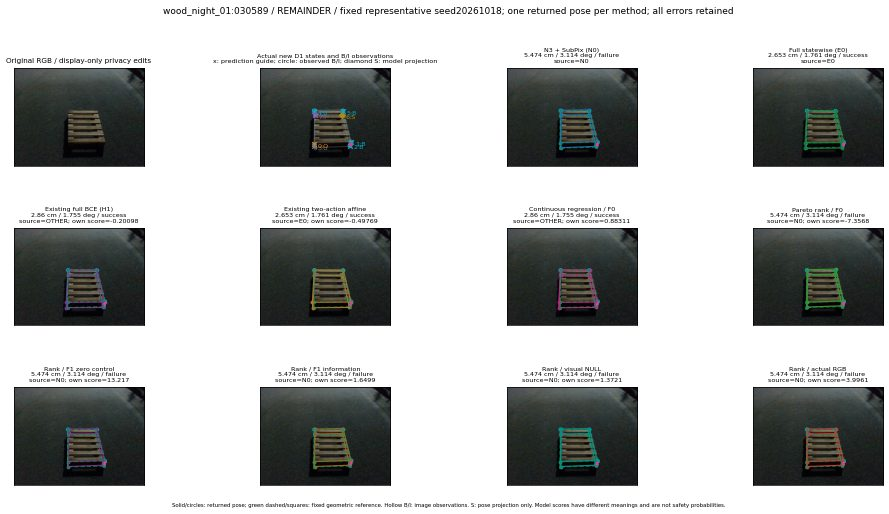

실선은 반환 자세, 초록 점선은 고정 기하 참조입니다. S는 영상 관측이 아닙니다. 점수는 모델별 의미가 다르며 보정된 안전 확률이 아닙니다. 개인정보 처리는 표시 사본에만 적용했습니다.
| 방법·seed | 위치 / 회전 / 공동성공 | 실제 출처 | 선택 후보 | 각 모델 자체 점수 |
|---|---|---|---|---|
| N0 | 5.474 cm / 3.114 deg / failure | N0 | N/A | N/A |
| E0 | 2.653 cm / 1.761 deg / success | E0 | N/A | N/A |
| E0_REGENERATED | 2.653 cm / 1.761 deg / success | E0 | E0_REGENERATED | N/A |
| POSEFIX_SUBPIX_PF_ANCHOR | 4.558 cm / 2.398 deg / success | OTHER | N/A | N/A |
| POSEFIX_SUBPIX_YOLO_ANCHOR | 4.558 cm / 2.441 deg / success | OTHER | N/A | N/A |
| D1_H1_MLP_s20261018 | 2.86 cm / 1.755 deg / success | OTHER | G10/ORIGINAL_WD/selected | -0.20098236203193665 |
| D1_H1_MLP_s20261019 | 2.86 cm / 1.755 deg / success | OTHER | G10/ORIGINAL_WD/selected | -0.19210465252399445 |
| D1_H1_MLP_s20261020 | 2.86 cm / 1.755 deg / success | OTHER | G10/ORIGINAL_WD/selected | -0.7999707460403442 |
| D1_H1_PAIR_MLP_s20261018 | 5.474 cm / 3.114 deg / failure | N0 | N0 | -1.226971983909607 |
| D1_H1_PAIR_MLP_s20261019 | 5.474 cm / 3.114 deg / failure | N0 | N0 | -1.324674129486084 |
| D1_H1_PAIR_MLP_s20261020 | 2.653 cm / 1.761 deg / success | E0 | E0_REGENERATED | -1.5944960117340088 |
| D1_H1_PAIR_ROLE_AFFINE_s20261018 | 2.653 cm / 1.761 deg / success | E0 | E0_REGENERATED | -0.49768874049186707 |
| D1_H1_PAIR_ROLE_AFFINE_s20261019 | 2.653 cm / 1.761 deg / success | E0 | E0_REGENERATED | -0.6258942484855652 |
| D1_H1_PAIR_ROLE_AFFINE_s20261020 | 5.474 cm / 3.114 deg / failure | N0 | N0 | -0.3881225287914276 |
| R_CONT_F0_s20261018 | 2.86 cm / 1.755 deg / success | OTHER | G10/ORIGINAL_WD/selected | 0.8831068873405457 |
| R_CONT_F0_s20261019 | 2.86 cm / 1.755 deg / success | OTHER | G10/ORIGINAL_WD/selected | 0.8340637683868408 |
| R_CONT_F0_s20261020 | 2.86 cm / 1.755 deg / success | OTHER | G10/ORIGINAL_WD/selected | 0.9627150893211365 |
| R_ORDER_F0_s20261018 | 5.474 cm / 3.114 deg / failure | N0 | N0 | -7.356844902038574 |
| R_ORDER_F0_s20261019 | 5.474 cm / 3.114 deg / failure | N0 | N0 | -2.0108656883239746 |
| R_ORDER_F0_s20261020 | 5.474 cm / 3.114 deg / failure | N0 | N0 | 1.9769679307937622 |
| R_ORDER_F1_ZERO_s20261018 | 5.474 cm / 3.114 deg / failure | N0 | N0 | 13.216622352600098 |
| R_ORDER_F1_ZERO_s20261019 | 5.474 cm / 3.114 deg / failure | N0 | N0 | 2.8573458194732666 |
| R_ORDER_F1_ZERO_s20261020 | 5.474 cm / 3.114 deg / failure | N0 | N0 | 4.53581428527832 |
| R_ORDER_F1_s20261018 | 5.474 cm / 3.114 deg / failure | N0 | N0 | 1.6498558521270752 |
| R_ORDER_F1_s20261019 | 5.474 cm / 3.114 deg / failure | N0 | N0 | 5.028687953948975 |
| R_ORDER_F1_s20261020 | 5.474 cm / 3.114 deg / failure | N0 | N0 | -0.1733243465423584 |
| V_ORDER_NULL_s20261018 | 5.474 cm / 3.114 deg / failure | N0 | N0 | 1.3720974922180176 |
| V_ORDER_NULL_s20261019 | 5.474 cm / 3.114 deg / failure | N0 | N0 | 0.3792254626750946 |
| V_ORDER_NULL_s20261020 | 5.474 cm / 3.114 deg / failure | N0 | N0 | -0.6606975197792053 |
| V_ORDER_RGB_s20261018 | 5.474 cm / 3.114 deg / failure | N0 | N0 | 3.99605131149292 |
| V_ORDER_RGB_s20261019 | 5.474 cm / 3.114 deg / failure | N0 | N0 | -0.44816267490386963 |
| V_ORDER_RGB_s20261020 | 5.474 cm / 3.114 deg / failure | N0 | N0 | -9.606586456298828 |